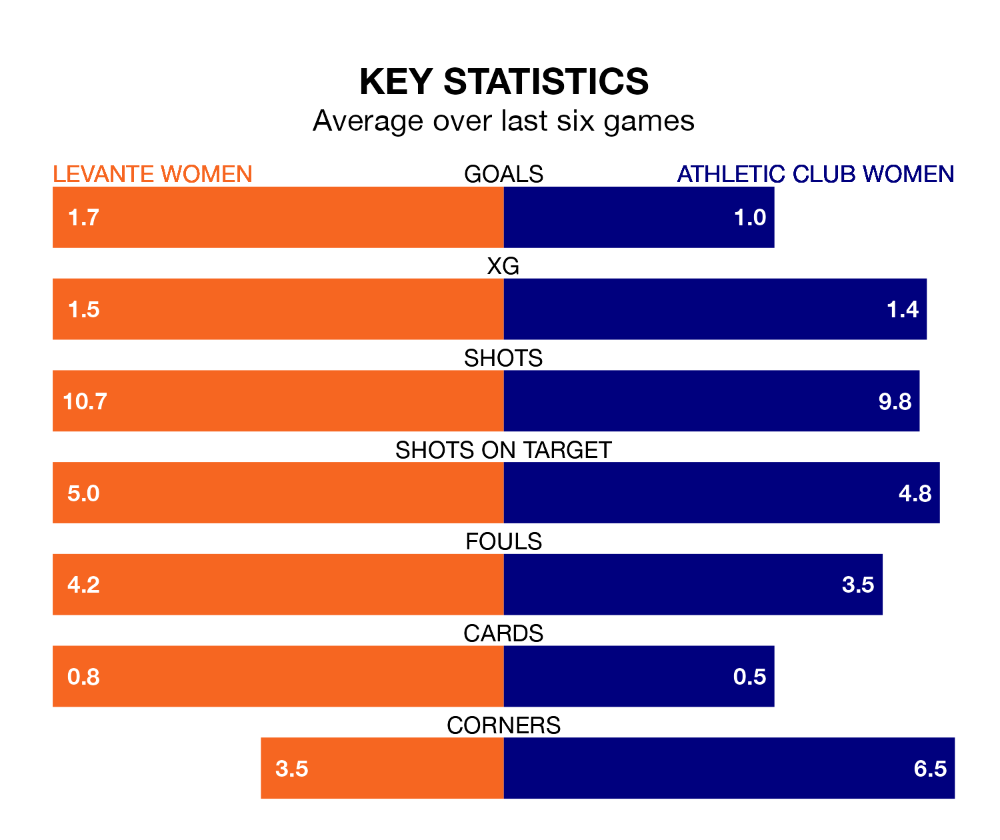

Levante Women face Athletic Club Women on Sunday seeking to protect their long unbeaten run in Liga F.
Levante are unbeaten in seven, with four wins and three draws, ahead of the 11am kick-off.
They face an Athletic Club team who have won three and drawn two over the same number of games.
With Emma Holmgren between the sticks, Levante can rely on one of the league's safest pair of hands. She has kept seven clean sheets in her 14 appearances this season, and only one other 'keeper – Barcelona Women's Catalina Thomas Coll Lluch – has been able to prevent the opposition scoring on more occasions in Liga F.
In Athletic Club's net, Adriana Nanclares Romero has five clean sheets in 12 games. She has conceded a goal every 90 minutes, 80% more often than the 158 minutes between goals for Holmgren.
In the last 10 years, Levante and Athletic Club have played each other on 19 occasions. Levante won 10 of them, Athletic Club six, and they drew three times.
On average, Levante scored 1.8 goals and Athletic Club 1.1 in those matches.
Their last meeting was on December 10, when Athletic Club won 1-0 at home.
The home side are third in the table after 18 games, of which they have won 11 and drawn six, earning 39 points.
The visitors are five places behind Levante in eighth, with eight wins and two draws putting them on 26 points.
With 18 goals in 18 games so far this season, Athletic Club are scoring at below the league average rate with 1.0 goals per game. But they are conceding fewer than average too, letting in 23 goals at a rate of 1.3 per game.
Levante, meanwhile, are above average scorers, with 1.7 goals per game, compared to a league average of 1.6. They have conceded 0.5 goals per game.
Levante's last match was on February 18, a 0-0 draw against Eibar Women.
Athletic Club beat Real Betis Women 1-0 last time out, on February 17, with Jone Amezaga on the scoresheet.
Updated: 09:34 (UTC), 08/03/24